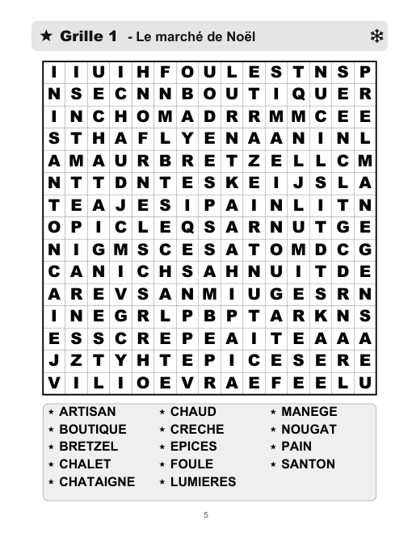

Mots mêlés de Noël à imprimer : 2 grilles gratuites en gros caractères
Deux grilles de mots mêlés spécial Noël, prêtes à imprimer : « Le marché de Noël » (bretzel, santon, châtaigne, nougat…) et « Les décorations ». Lettres en gros caractères, grille de 15 × 15, liste de mots sous chaque grille, solutions incluses. Gratuit, sans inscription.
Télécharger le PDF (4 pages)
Télécharger les 2 grilles de Noël (PDF)Format 21,6 × 27,9 cm (Letter). Sur du papier A4, choisissez « ajuster à la page » : la grille reste bien lisible.

Comment jouer
- Retrouvez chaque mot de la liste dans la grille : dans ces deux grilles (niveau 1), il se lit de gauche à droite, de haut en bas ou en diagonale vers le bas, jamais à l’envers.
- Les accents et les tirets ne comptent pas : CHÂTAIGNE s’écrit CHATAIGNE.
- Entourez-le ou barrez-le, puis cochez-le dans la liste.
- Bloqué ? Les solutions sont en dernière page.
Une activité calme pour l’après-midi du 24, à glisser dans une carte de vœux, pour un atelier en maison de retraite ou pour occuper la table des grands pendant que le repas cuit.
Le cahier complet : 80 grilles de Noël
Ces deux grilles sont extraites du cahier « Mots mêlés spécial Noël gros caractères » publié par Inble Jeux : 80 grilles thématiques (réveillon, treize desserts, père Noël, crèche, boissons chaudes, marchés d’hiver…), une page « Ce cahier est offert à » pour la dédicace, une liste de cadeaux à remplir, une page « Mes souvenirs de Noël » et toutes les solutions. Grand format broché, 104 pages.
Voir le cahier de Noël sur Amazon.frUne idée de cadeau pour un papy, une mamie ou un parent qui aime les jeux de lettres.
Autres jeux gratuits : mots fléchés gros caractères à imprimer · mots fléchés années 60 · années 70 · années 80.